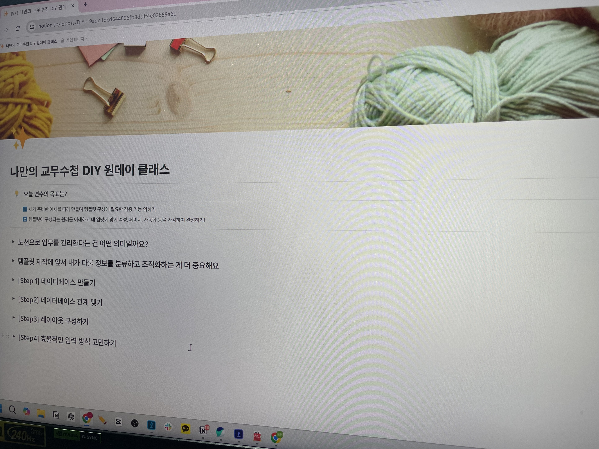
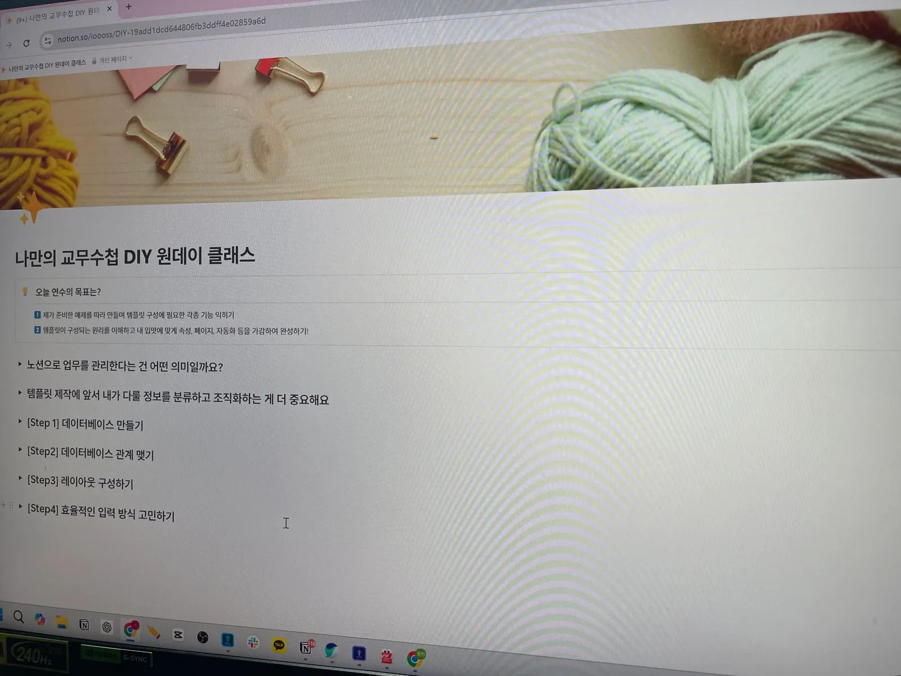
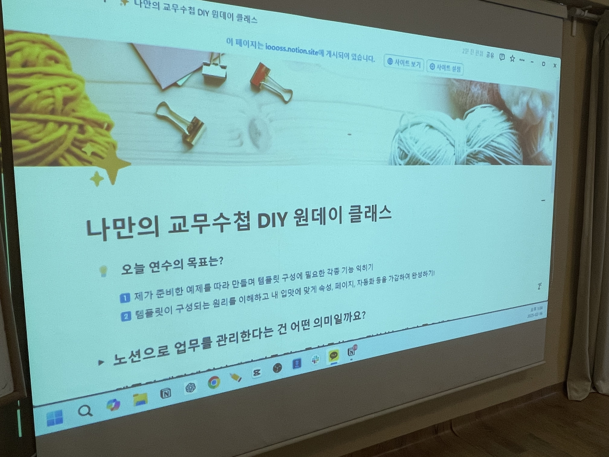
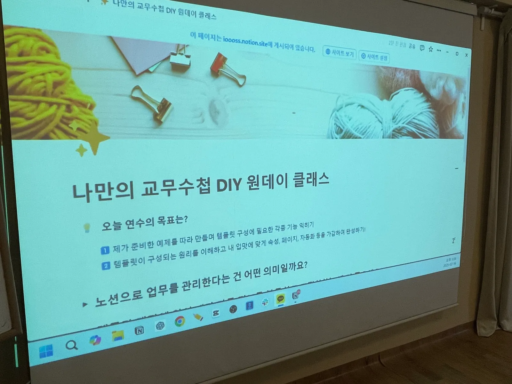
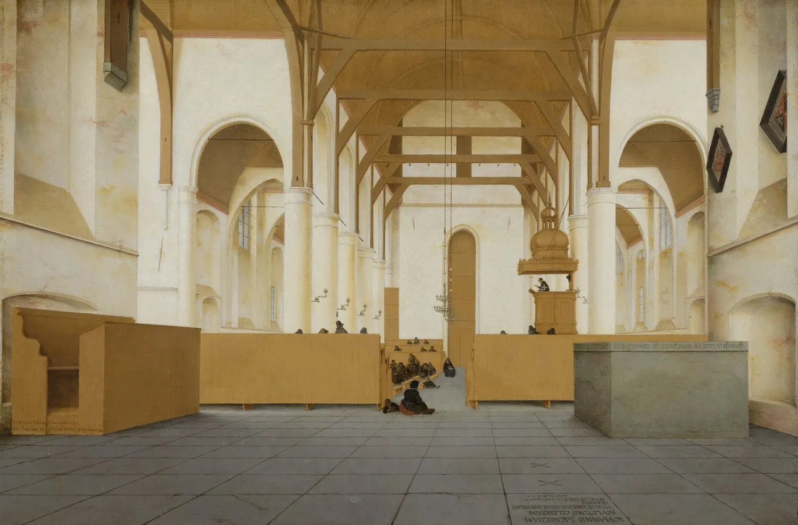

왼쪽(원본)과 오른쪽(변환본 WebP)을 나란히 비교하세요. 화면을 확대해 텍스트·얼굴·디테일이 깨지지 않는지 보면 됩니다.
| 구분 | 원본 | 변환본 (실제 적용될 WebP) |
|---|---|---|
밋업1 갤러리 사진01.jpg |
 |
 |
밋업1 갤러리 사진02.jpg |
 |
 |
특강 포스터(PNG·텍스트 많음)notion-special-db-cover.png |
||
특강 포스터(PNG·텍스트 많음)notion-special-layout-cover.png |
||
크리에이터 실사1000-real.jpg |
||
크리에이터 캐릭터1000-char.png |
||
커버 이미지reading-challenge-cover.jpg |
 |